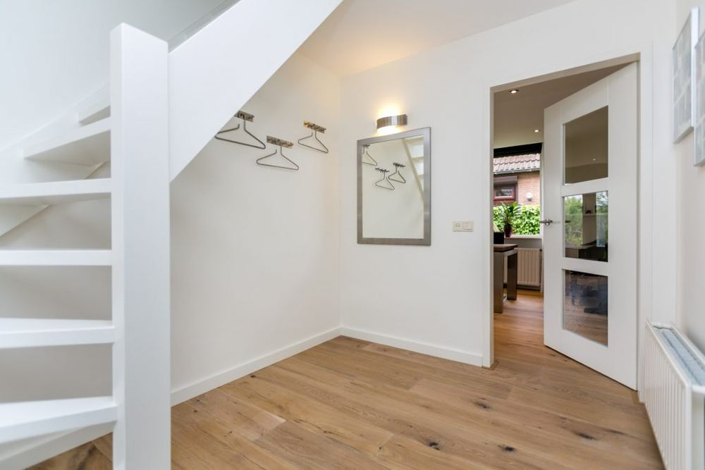
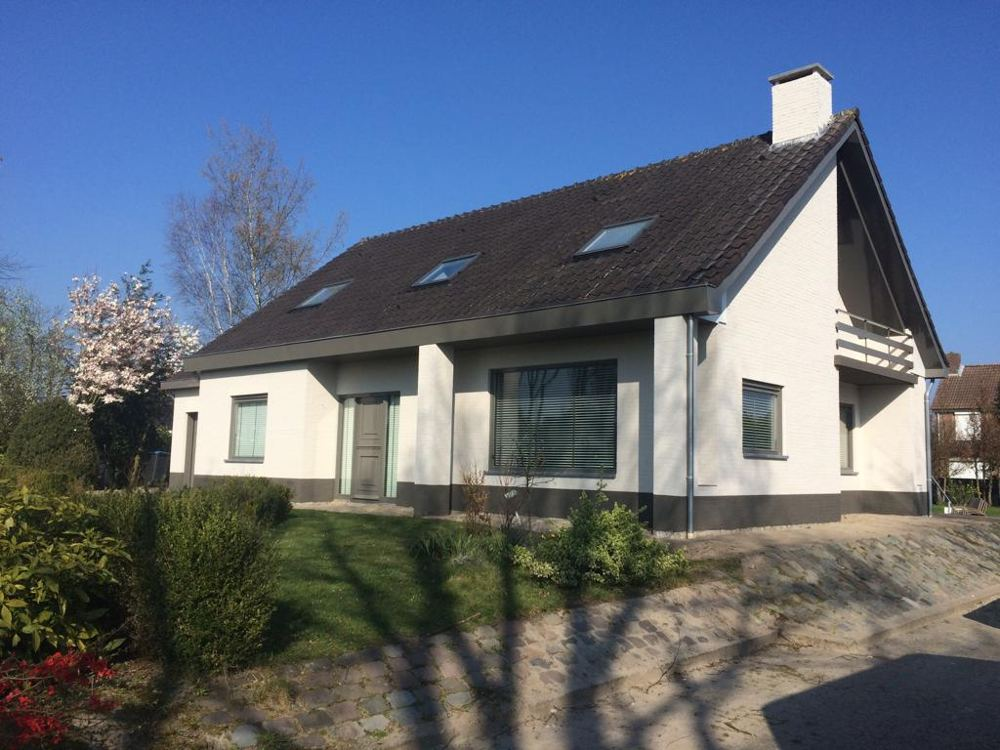
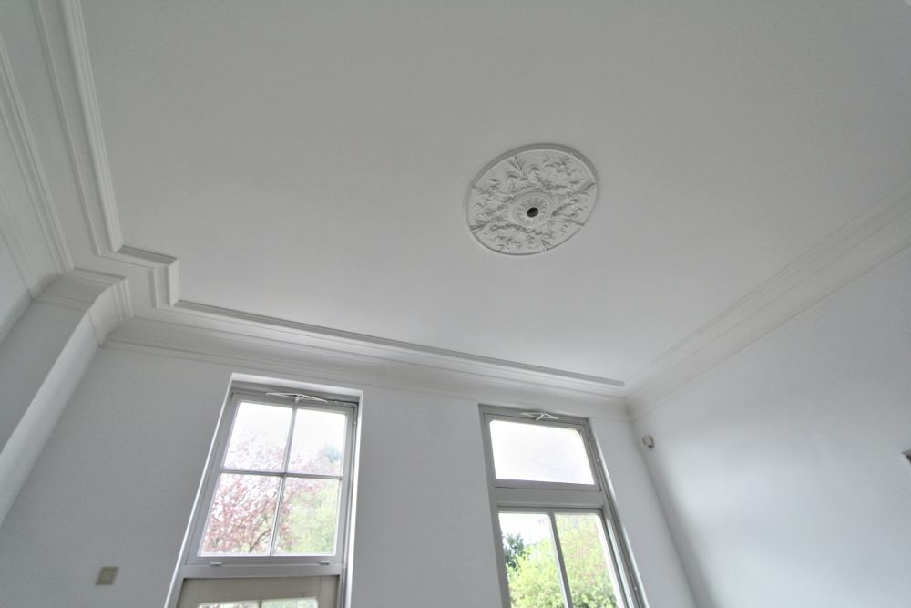
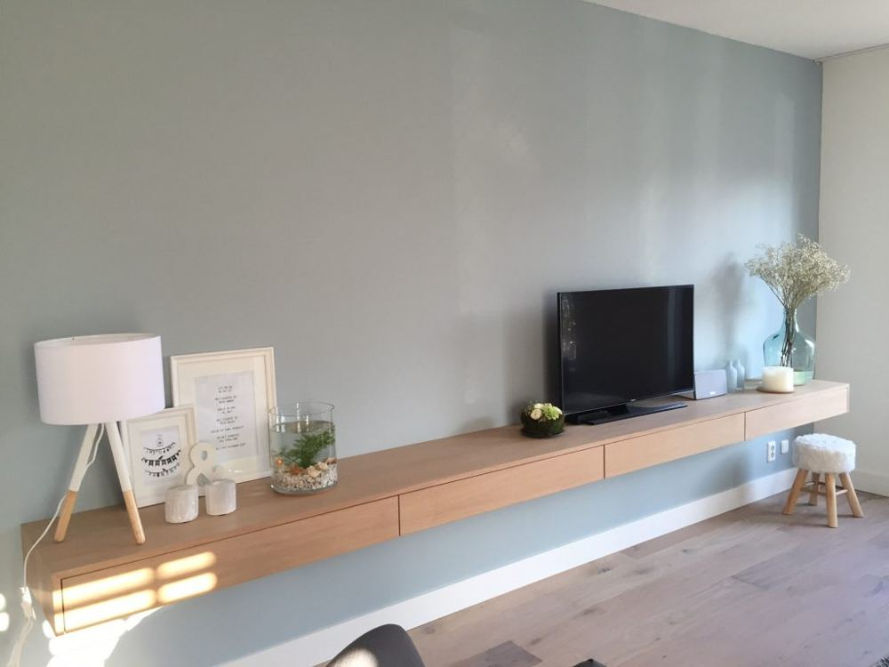

Van alle markten thuis
Een kleine greep uit onze gerealiseerde projecten, voor particulieren en zakelijke opdrachtgevers.






U kunt bij ons terecht voor schilderwerken binnen en buiten en gevelreiniging, maar wij zijn ook actief als stukadoor in Etten-Leur, met buitengevelisolatie en buitengevelstucwerk. Wij zijn actief in de regio West-Brabant.
Vakkundig schilderwerk en de juiste verf zorgen voor een langdurige bescherming van uw houtwerk. Voor onderhoud, renovatie en nieuwbouw.
Voor nieuwbouwwoningen ook renovlies: praktisch dezelfde uitstraling als stucwerk, sneller, voordeliger en zonder droogtijd.
Uw huis opknappen of restylen zonder gedoe. Wij verzorgen de stukadoors-, schilder- en afbouwwerkzaamheden van A tot Z, samen met onze partners.
Buitengevelstucwerk en isolatie, gevelreiniging en onderhoud, keimen en kaleien.
Voor timmerwerk, elektra en loodgieterswerk werken wij samen met ervaren, betrouwbare bedrijven.
Bij u thuis, of op afspraak in onze showroom op tijden die u goed uitkomen.
Een kleine greep uit onze gerealiseerde projecten, voor particulieren en zakelijke opdrachtgevers.



